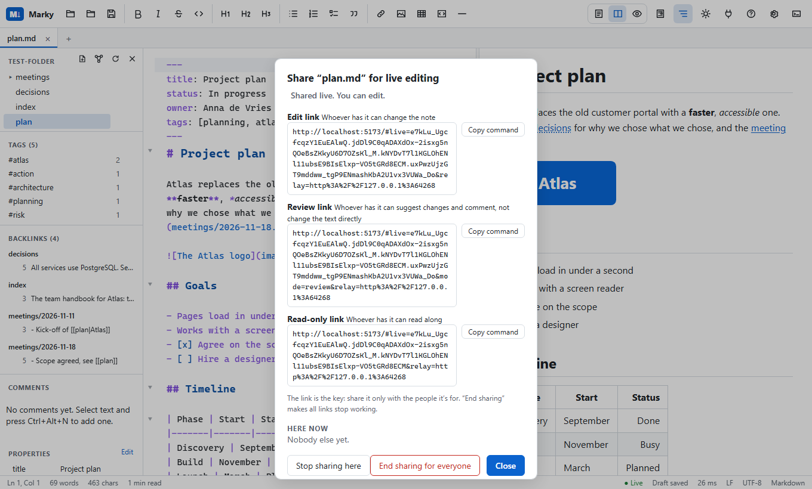
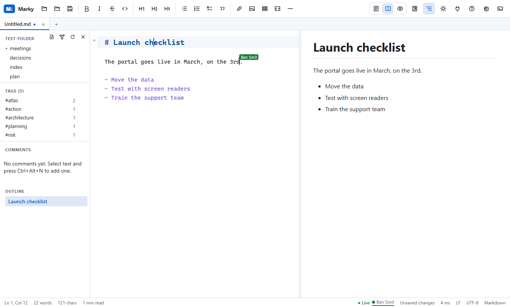
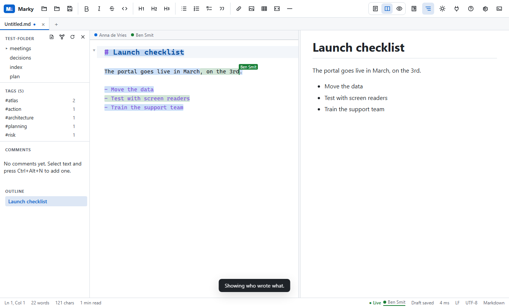

11. Editing together, live
Several people can edit one note at the same time, each in Marky in their browser or the desktop app, and see each other's cursors.
What you need
A live-editing server: a small Marky relay that your organisation runs (a Docker image; see the relay documentation). It only passes on encrypted messages and can't read the notes. When you use the Marky web app that the relay itself serves, Marky finds it by itself.
Sharing a note
- Open the note and run Share for live editing….
- The first time, fill in the server's address; it's remembered (Settings › General).
- Start sharing. Marky asks your name once, so the others see who's who. Pick your colour in Settings › General.

You get three links:
| Link | Whoever has it can … |
|---|---|
| Edit link | change the note |
| Review link | suggest changes and comment, but not change the text directly |
| Read-only link | read along |
Copy one and send it. The link is the key: share it only with the people it's for.
Joining
Opening a link starts Marky with the shared note in a tab of its own (Desktop: Join a shared note… and paste the link). The keys disappear from the address bar once you're in.
While you edit together

- You see the others' cursors with their names; the status bar shows ● Live and who's here. Click it for the links and the people.
- Ctrl+Z undoes only your own changes.
- Comments are shared too: new threads and replies appear for everyone at once, on the right words.
- Suggestions work as usual.
- Offline: if the connection drops, the status bar says Live · reconnecting…; keep typing and everything merges when it's back.
Reviewers
Someone who opens a review link is always in Suggest mode: the status bar says Reviewing, everything they type or delete becomes a suggestion in their name, and they can't accept or reject suggestions; the editors decide. Reviewers can pass on review and read-only links, not edit links.
A review link contains the edit key, and Marky (not the encryption) keeps reviewers to suggestions. Give review links to people you'd trust with an edit link.
Who wrote what
Show who wrote what (shared notes) on/off gives each person's text a light background in their colour, with a legend above the note and their name when you point at a passage. Text from before sharing belongs to whoever shared the note.

The version history of a shared note also says who changed each version (Your work is safe).
Your file
For the person who shared it, the note stays an ordinary file, saved as always. Close it (or Marky) while the others keep editing, and reopening it reconnects and brings in what changed meanwhile. If the file changes outside Marky (a Git pull), the change is merged in for everyone.
Stopping
- Stop sharing here (or Leave) disconnects you; the others carry on.
- End sharing for everyone disconnects everyone and makes all links stop working. Everybody keeps the text they have.
Privacy and limits
- Everything is encrypted on your computer before it leaves, with a key that's only in the link. The server can't read the note, the names or the comments; changes are signed, so read-only links can't change anything.
- The server keeps the encrypted note for those who join later, until sharing ends or nobody has changed it for 30 days.
- Names aren't checked: there are no accounts. Trust a name as much as you trust the people you sent the link to.
- Notes up to 8 MB can be shared. Encrypted notes can't be shared live.